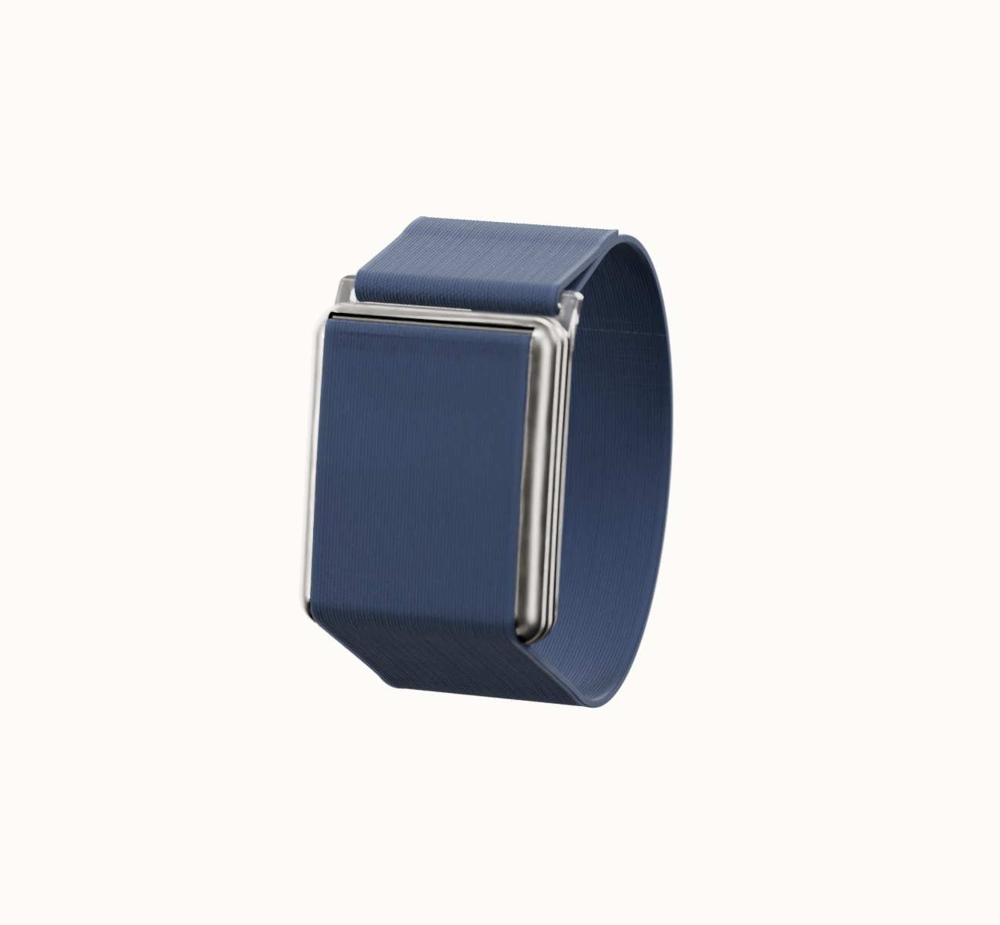

One core, swappable sensor pucks and a configuration built around your application. You receive the raw data, and it stays with you.

- 1st in Europe2026
- 1st nationally2026
- Pitch Event2025/26
- Innovator Scholarship
OpenPulse Gen 2
- 01 · Case
Titanium and resin, made to last.
- 02 · Band
A fine weave from Japan.
- 03 · Core
Everything that stays.
- 04 · Pucks
Sensors you can swap.
Explore the pucks→
Design state, rendered from CAD. Not yet built or tested.
Every signal. Raw. Yours.
No cloud in between and no scores laid on top. The API hands you every sample the sensors capture, in the format you work with, whenever you ask.
Example interfaces. The API is in development; channels and rates as specified for Gen 2.
Measure the body and the world around it. With the environment puck.
Examples. Air puck available today, other environment pucks on request. Not a certified gas detector or dosimeter.
Five pucks. One core.
Every port takes any puck. They are swapped in the lab with standard tools, without soldering. And if your application needs a signal we do not cover yet, we build the puck for it.
Change the sensor, not the device.
-
Four screws. Standard tools.
Open the clear cover, lift the puck out, press the new one in. No soldering, no glue.
-
It only fits the right way.
Every port is mechanically keyed, so a puck cannot go in rotated or reversed.
-
Every puck knows what it is.
Type, serial number and calibration are stored in the puck and travel with every recording.
-
Set up in your lab, not by the wearer.
One configuration per application, fitted by your team before the study or rollout starts.
Video generated from our 3D model of Gen 2. Gen 2 is in development; the points above are its design specification.